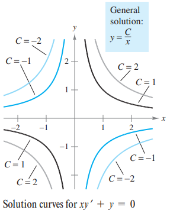
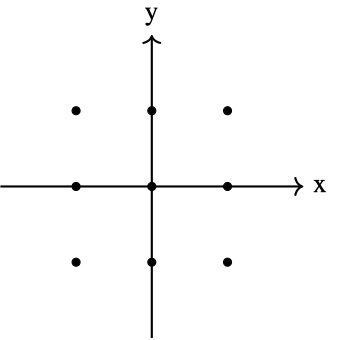
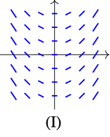
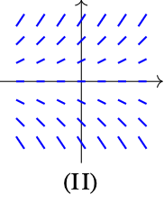
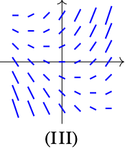
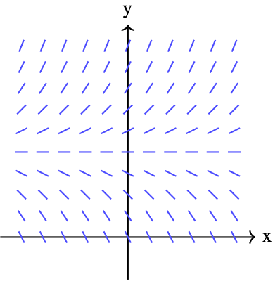
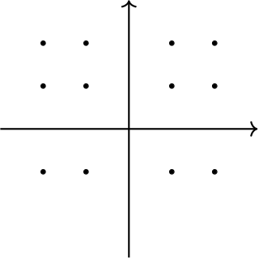
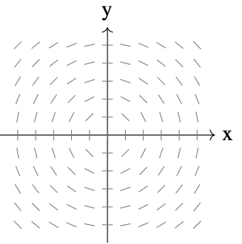
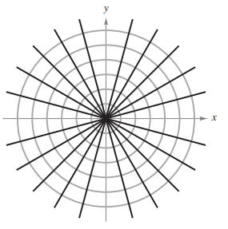
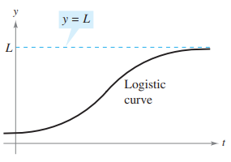

Chapter 6: Differential Equations
6.1 Slope Fields and Euler’s Method
6.1.1 General and Particular Solutions
Physical phenomena can be described by different equations; you will see this in problems like radioactive decay, population growth, and Newton’s Law of Cooling can be formulated in terms of differential equations.
Recall the definition of a differential equation:
A function \(y=f(x)\) is called a solution of a differential equation if the equation is satisfied when \(y\) and its derivatives are replaced by \(f(x)\) and its derivatives. For example, differentiation and substitution would show that \(y=e^{-2x}\) is a solution of the differential equation \(y'+2y=0\). It can be shown that every solution of this differential equation is of the form:
\[y = Ce^{-2x} \hspace{3cm} \text{General Solution of } y'+2y=0\]
where \(C\) is any real number. This solution is called the general solution. Some differential equations have singular solutions that cannot be written as special cases of the general solution. However such solutions are not considered in this text. The order of a differential equation is determined by the highest-order derivative in the equation. For example, \(y'=4y\) is a first-order differential equation.
In section 4.1, you saw that the second-order differential equation \(s''(t)=32\) has the general solution:
\[s(t)=-16t^2+C_1+C_2 \hspace{3cm} \text{General solution of } s''(t)=-32\]
which contains two arbitrary constants. It can be shown that a differential equation of order \(n\) has a general solution with \(n\) arbitrary constants.
Geometrically, the general solution of a first-order differential equation represents a family of curves known as solution curves, one for each value assigned to the arbitrary constant. For instance, you can verify that every function of the form
\[y = \frac{C}{x}\]
is a solution of the differential equation \(xy' + y = 0\). The figure below shows four of the solution curves corresponding to different values of \(C\).

As discussed in Section 4.1, particular solutions of a differential equation are obtained from initial conditions that give the value of the dependent variable. The term “initial condition” stems from the fact that, often in problems involving time, the value of the dependent variable or one of its derivatives is known at the initial time \(t=0\). For instance, the second-order differential equation \(s''(t)=-32\) having the general solution:
\[s(t) = -16t^2 + C_1t +C_2\]
might have the following initial conditions:
\[s(0) = 80, \quad s'(0)=64\]
In this case, the initial conditions yield the particular solution:
\[s(t) = -16t^2 +64t +80\]
Exercises: Verify Solutions and Find Particular Solutions
Determine whether the function \(y = x^3\) is a solution to the differential equation \(xy' - 3y = 0\).
Verify that \(y = 2e^{-x} + xe^{-x}\) is a solution to the second-order differential equation \(y'' + 2y' + y = 0\).
The general solution of the differential equation \(y' + 2y = 0\) is given by \(y = Ce^{-2x}\). Find the particular solution that satisfies the initial condition \(y(0) = 5\).
Verify that \(y = C_1 \sin(3x) + C_2 \cos(3x)\) is a solution to the differential equation \(y'' + 9y = 0\).
Given the general solution \(y = Cx^2\) for the differential equation \(xy' = 2y\), find the particular solution whose graph passes through the point \((2, 12)\).
For the differential equation \(\frac{dy}{dx} = 4x - 1\), find the particular solution \(y=f(x)\) that passes through the point \((1, 3)\).
6.1.2 Slope Fields
Solving a differential equation analytically can be difficult or even impossible. However, there is a graphical approach you can use to learn a lot about the solution of
\[y'=F(x,y) \hspace{3cm} \text{Differential Equation}\]
At each point \((x,y)\) in the \(xy\)-plane where \(F\) is defined, the differential equation determines the slope \(y'=F(x,y)\). If you draw short line segments with slope \(F(x,y)\) at selected points \((x,y)\) in the domain of \(F\), then these line segments form a slope field, or a direction field for the differential equation \(y'=F(x,y)\). Each line segment has the same slope as the solution curve through that point. A slope field shows the general shape of all the solutions.
A solution curve of a differential equation \(y'=F(x,y)\) is simply a curve in the \(xy\)-plane whose tangent line at each point \((x,y)\) has slope equal to \(F(x,y)\). This is illustrated in the next example.
A note from the textbook: Drawing a slope field by hand is tedious. In practice, slope fields are usually drawn using a graphing utility.
A note from your teacher, me, Cole \(\mathbb{R}\)idgway: The TI-84 can do this.
Exercises: Sketch, Match, and Interpret Slope Fields
Sketching: Sketch a slope field for the differential equation \(y' = x + y\) at the nine points indicated below.

Exercise 1 Graph Matching: Match the differential equation with its slope field.

Graph I 
Graph II 
Graph III (A) \(\frac{dy}{dx} = x + y\)
(B) \(\frac{dy}{dx} = x\)
(C) \(\frac{dy}{dx} = y\)
Interpretation: The slope field for the differential equation \(\frac{dy}{dx} = y - 2\) is shown below. Sketch the solution curve that passes through the point \((0, 1)\) and the solution curve that passes through \((0, 3)\).

Exercise 3 Graph Consider the differential equation \(\frac{dy}{dx} = \frac{x}{y}\). a) On the axes provided, sketch a slope field for the given differential equation at the twelve points indicated.

Exercise 4a Graph b) Describe the general shape of the solution curves.
Which of the following differential equations generates a slope field where the slopes are parallel along vertical lines?
(A) \(\frac{dy}{dx} = x + y\)
(B) \(\frac{dy}{dx} = xy\)
(C) \(\frac{dy}{dx} = 2x\)
(D) \(\frac{dy}{dx} = 2y\)
Analysis: The figure below shows the slope field for a differential equation \(\frac{dy}{dx} = f(x,y)\).

Exercise 6 Graph Based on the slope field, which of the following could be the specific solution \(y=f(x)\) passing through \((0,2)\)?
(A) \(y = x^2 + 2\)
(B) \(y = \sqrt{4-x^2}\)
(C) \(y = e^x + 1\)
(D) \(y = 2\)
Conceptual Questions
Visualizing Variable Dependence: Analytically, a differential equation can depend on \(x\), \(y\), or both. Geometrically, the layout of the slope field reveals this dependence.
- If the slopes are identical along any vertical line (moving up and down doesn’t change the slope), the differential equation depends only on \(x\) (e.g., \(y' = 2x\)).
- If the slopes are identical along any horizontal line (moving left and right doesn’t change the slope), the differential equation depends only on \(y\) (e.g., \(y' = 2y\)). Explain why this geometric symmetry occurs. (Hint: Consider how changing the coordinate \(y\) affects the value of \(y'\) in the equation \(y'=2x\)).
The Geometry of a Solution Curve: The text states that a slope field shows the general shape of all solutions. When you sketch a particular solution curve starting at a point \((x_1, y_1)\), you must draw it such that the curve is tangent to every slope segment it passes near. Analytically, this is because \(y'\) represents the instantaneous rate of change. Explain why a curve that crosses the slope segments at a sharp angle (perpendicularly, for example) cannot be a solution to the differential equation.
Interpreting “Flat” Slopes (Equilibrium): Consider the differential equation \(y' = y - 2\). Analytically, if \(y=2\), the derivative \(y'\) becomes 0. Geometrically, this creates a horizontal row of flat slope segments at the height \(y=2\). If a solution curve starts exactly at the initial condition \(y(0)=2\), what does the graph of this particular solution look like for all time \(t\)?
6.1.3 Euler’s Method
This is not on the AP Calculus AB Test. Please see this clip from the movie Hidden Figures.
Euler’s Method is a numerical approach to approximating the particular solution of the differential equation \[y'=F(x,y)\] that passes through the point \((x_0,y_0)\). From the given information, you know that the graph of the solution passes through the point \((x_0,y_0)\) and has a slope of \(F(x_0,y_0)\) at this point. This gives you a “starting point” for approximating the solution.
From this starting point, you can proceed in the direction indicated by the slope. Using a small step \(h\), move along the tangent line until you arrive at the point \((x_1,y_1)\), where:
\[x_1=x_0+h \quad \text{ and } \quad y_1 = y_0 + hF(x_0,y_0)\]
If you think of \((x_1,y_1)\) as a new starting point, you can repeat the process to obtain a second point \((x_2,y_2)\).
6.2 Differential Equations: Growth and Decay
6.2.1 Differential Equations
In the preceding section, you learned to analyze visually the solutions of differential equations using slope fields and to approximate solutions numerically using Euler’s Method. Analytically, you have learned to solve only two types of differential equations—those of the forms:
\[y'=f(x) \quad \text{ and } \quad y''=f(x)\]
In this section, you will learn how to solve a more general type of differential equation. The strategy is to rewrite the equation so that each variable occurs on only one side of the equation. This strategy is called separation of variables. (You will study this strategy in detail in Section 6.3).
It is very common for people to use either prime notation (like in the previous example) or using Leibniz notation (as shown below). “Separating the variables” feels more natural using Leibniz notation, but many mathematicians use the prime notation because it is faster.
\[ \begin{align*} \frac{dy}{dx} &= \frac{2x}{y} && \text{(Write original equation)} \\ y \, dy &= 2x \, dx && \text{(Multiply both sides by } y) \\ \int y \, dy &= \int 2x \, dx && \text{(Integrate with respect to } x) \\ \frac{1}{2}y^2 &= x^2 + C_1 && \text{(Apply Power Rule)} \\ y^2 - 2x^2 &= C && \text{(Rewrite, letting } C = 2C_1) \end{align*} \]
6.2.2 Growth and Decay Models
In many applications, the rate of change of a variable \(y\) is proportional to the value of \(y\). If \(y\) is a function of time \(t\), the proportion can be written as shown:
\[ \underbrace{\frac{dy}{dt}}_{\text{Rate of change of } y} \quad \underbrace{=}_{\text{is}} \quad \underbrace{ky}_{\text{proportional to } y} \]
The general solution of this differential equation is given in the following theorem.
Radioactive decay is measured in terms of half-life—the number of years required for a half of the atoms in a sample of radioactive material to decay. The half-lives of some common radioactive isotopes are shown below.
| Isotope | Half-Life |
|---|---|
| Uranium (\(^{238}\text{U}\)) | 4,470,000,000 years |
| Plutonium (\(^{239}\text{Pu}\)) | 24,100 years |
| Carbon (\(^{14}\text{C}\)) | 5,715 years |
| Radium (\(^{226}\text{Ra}\)) | 1,599 years |
| Einsteinium (\(^{276}\text{Es}\)) | 276 years |
| Nobelium (\(^{257}\text{No}\)) | 25 seconds |
From the previous example, notice that in an exponential growth or decay problem, it is easy to solve for \(C\) when you are given the value of \(y\) at \(t=0\).
Throughout these examples, you did not actually have to solve the differential equation \(y' = ky\). It was only done in the proof! The next example demonstrates a problem whose solution involves the separation of variables technique. The example concerns Newton’s Law of Cooling, which states that the rate of change in the temperature of an object is proportional to the difference between the object’s temperature and the temperature of the surrounding medium.
Exercises: Growth and Decay Models
Find the general solution of the differential equation \(y' = 4xy\).
Find the particular solution \(y=f(x)\) to the differential equation \(\frac{dy}{dx} = e^{x-y}\) with the initial condition \(f(0) = \ln(2)\).
The rate of change of the number of bacteria in a culture is proportional to the number of bacteria present. If the population of bacteria doubles every 5 hours, how long will it take for the population to triple?
A radioactive isotope, “Calc-238,” decays at a rate proportional to the amount present. If the half-life of Calc-238 is 1,500 years, what percentage of the original sample will remain after 1,000 years?
A metal ingot is heated to \(200^\circ\)F and then placed in a room where the temperature is a constant \(70^\circ\)F. After 10 minutes, the ingot cools to \(150^\circ\)F. According to Newton’s Law of Cooling, what will the temperature of the ingot be after 20 minutes?
Consider the differential equation \(\frac{dy}{dx} = \frac{y-1}{x^2}\), where \(x \neq 0\). a) Find the particular solution \(y=f(x)\) to the differential equation with the initial condition \(f(2) = 0\). b) For the particular solution found in part (a), find \(\lim_{x \to \infty} f(x)\).
Conceptual Questions
Answer the following in 1-3 complete sentences.
The Necessity of Separation: Analytically, in earlier sections, you solved differential equations like \(y' = 2x\) by simply integrating both sides with respect to \(x\). Explain analytically why this direct integration method fails for an equation like \(y' = 2y\), and how moving the \(y\) term to the left side allows the integration to proceed.
Geometric Meaning of the General Solution: When you perform indefinite integration to find the general solution of a differential equation (e.g., \(y = x^2 + C\)), you introduce an arbitrary constant \(C\). Geometrically, this general solution represents an infinite “family” of curves. Explain why a single initial condition, such as \(y(1)=3\), is sufficient to isolate one specific curve from this infinite family.
Analyzing Exponential Growth Rates: The differential equation for exponential growth is \(y' = ky\) (where \(k > 0\)). In the context of a population model, this equation implies that the rate of growth is proportional to the current population size. Explain why this relationship causes the graph of the population to become steeper and steeper as \(y\) increases, rather than maintaining a constant slope.
Asymptotic Behavior in Cooling: Newton’s Law of Cooling models temperature change with the equation \(y' = k(y - T_{room})\). Algebraically, as the object’s temperature \(y\) gets closer to the room temperature \(T_{room}\), the value of the derivative \(y'\) approaches zero. Describe the visual feature this creates on the graph of Temperature vs. Time as \(t \to \infty\).
6.3 Separation of Variables and the Logistic Equation
6.3.1 Separation of Variables
Consider a differential equation that can be written in the form: \[M(x) + N(y) \frac{dy}{dx} = 0\]
where \(M\) is a continuous function of \(x\) alone and \(N\) is a continuous function of \(y\) alone. As you saw in the preceding section, for this type of equation, all \(x\) terms can be collected with \(dx\) and all \(y\) terms with \(dy\), and a solution can be obtained by integration. Such equations are said to be separable, and the solution procedure is called separation of variables. Below are some examples of differential equations that are separable.
| Original Differential Equation | Rewritten with Variables Separated |
|---|---|
| \(x^2 + 3y \frac{dy}{dx} = 0\) | \(3y \, dy = -x^2 \, dx\) |
| \((\sin x)y' = \cos x\) | \(dy = \cot x \, dx\) |
| \(\frac{xy'}{e^y + 1} = 2\) | \(\frac{1}{e^y + 1} \, dy = \frac{2}{x} \, dx\) |
In some cases it is not feasible to write the general solution in the explicit form \(y=f(x)\). The next example illustrates such a solution. Implicit differentiation can be used to verify this solution.
Exercises: Separation of Variables
Find the general solution of the differential equation \(\frac{dy}{dx} = 3x^2 e^{-y}\).
Find the particular solution \(y=f(x)\) to the differential equation \(\frac{dy}{dx} = xy^2\) with the initial condition \(f(1) = -1\). State the domain of the solution.
Find the particular solution \(y=f(x)\) to the differential equation \(\frac{dy}{dx} = (1+y^2)\cos(x)\) with the initial condition \(f(0) = \sqrt{3}\).
A curve passes through the point \((0, 2)\) and has a slope of \(\frac{2x}{y-1}\) at any point \((x,y)\) where \(y \neq 1\). Find the equation of the curve.
The rate of change of a quantity \(P\) is proportional to the square root of \(P\). At time \(t=0\), \(P=9\), and at time \(t=2\), \(P=25\). Find the value of \(P\) at time \(t=3\).
Consider the differential equation \(\frac{dy}{dx} = \frac{x}{y}\) for \(y \neq 0\). a) Find the particular solution \(y=f(x)\) with the initial condition \(f(-2) = -1\). b) State the domain of the particular solution found in part (a).
Conceptual Questions
Answer the following in 1-3 complete sentences.
Identifying Separable Equations: Analytically, the method of separation of variables requires that the differential equation can be factored into the form \(\frac{dy}{dx} = g(x)h(y)\). Explain algebraically why a differential equation like \(\frac{dy}{dx} = x + y\) cannot be solved using this method, whereas \(\frac{dy}{dx} = x + xy\) can be. (Hint: Try to separate the \(x\) and \(y\) terms onto opposite sides for both equations).
Lost Solutions and Division: In the example \((x^2 + 4)\frac{dy}{dx} = xy\), the first algebraic step is to divide both sides by \(y\) to separate the variables. Analytically, division by zero is undefined.
- Explain why it is necessary to check if \(y=0\) is a solution before performing this division.
- Geometrically, what does the solution \(y=0\) look like on a graph, and how does it relate to the slope field along the x-axis?
Implicit vs. Explicit Solutions: The text notes that sometimes it is not feasible to solve for \(y\) explicitly, resulting in an implicit solution (e.g., \(y^2 - \ln(y^2) + e^{x^2} = C\)). Geometrically, an explicit function \(y=f(x)\) must pass the vertical line test. Explain why an implicit solution curve derived from a differential equation might fail the vertical line test, yet still be a valid representation of the relationship between \(x\) and \(y\).
6.3.2 Homogeneous Differential Equations
Some differential equations that are not separable in \(x\) and \(y\) can be made separable by a change of variables. This is true for differential equations of the form \(y' = f(x,y)\), where \(f\) is a homogeneous function. The function given by \(f(x,y)\) is homogeneous of degree \(n\) if: \[f(tx,ty) = t^nf(x,y)\] where \(n\) is a real number.
To solve a homogeneous differential equation by the method of separation of variables, use the following change of variables theorem.
Exercises: Homogeneous Differential Equations
Determine whether the following functions are homogeneous. If they are, state the degree of the function. a) \(f(x,y) = x^3 + 3x^2y - y^3\) b) \(f(x,y) = \frac{x^2 - y^2}{\sqrt{x^2+y^2}}\) c) \(f(x,y) = x^2 + \sin(x+y)\)
Show that the differential equation \((x^2 + y^2)dx - 2xy \, dy = 0\) is homogeneous, and find the general solution.
Find the general solution of the differential equation \(y' = \frac{x+y}{2x}\).
Find the particular solution \(y=f(x)\) to the differential equation \(xy' = y + \sqrt{x^2-y^2}\) with the initial condition \(f(1) = 0\). (Assume \(x>0\)).
Find the general solution of the differential equation \(y' = \frac{y}{x} + \sec\left(\frac{y}{x}\right)\).
Consider the differential equation \((y^2 + xy)dx - x^2 \, dy = 0\). a) Verify that the differential equation is homogeneous. b) Solve the differential equation by using the substitution \(y=vx\). c) Verify your solution from part (b) by using the substitution \(x=uy\).
Conceptual Questions
Answer the following in 1-3 complete sentences.
Recognizing Homogeneity Algebraically: Analytically, the formal test for a homogeneous function is \(f(tx, ty) = t^n f(x,y)\). However, for polynomial functions, you can often determine homogeneity by inspecting the exponents. In the expression \(x^2y - 4x^3 + 3xy^2\), every term has a “total degree” (sum of exponents) of 3. Explain why an expression like \(x^3 + xy\) fails this test and therefore prevents the differential equation from being solved using the homogeneous method.
The Purpose of the Substitution: The text introduces the substitution \(y = vx\) (and consequently \(dy = v\,dx + x\,dv\)). In the context of solving differential equations, we often use substitutions to simplify an integral. However, in this specific context, what is the primary structural change that occurs to the differential equation after substituting and simplifying?
(A) It transforms a linear equation into a quadratic one.
(B) It transforms a non-separable equation into a separable one.
(C) It eliminates the differential \(dx\) entirely.
(D) It makes the equation homogeneous of degree 0.
Geometric Behavior of Homogeneous Slopes: Many homogeneous differential equations can be rewritten in the form \(y' = F\left(\frac{y}{x}\right)\). Analytically, this means the slope depends only on the ratio of the coordinates, not their individual magnitudes. Geometrically, the ratio \(\frac{y}{x}\) is constant along any line passing through the origin. Looking at a slope field for a homogeneous equation, what characteristic pattern should appear along any straight line radiating from the origin?
6.3.3 Applications
A common problem in electrostatics, thermodynamics, and hydrodynamics involves finding a family of curves, each of which is orthogonal to all members of a given family of curves. For example, the figure below shows a family of circles: \[x^2+y^2=C\]
each of which intersects the lines in the family: \[y=Kx\]
at right angles. Two such families of curves are said to be mutually orthogonal, and each curve in one of the families is called an orthogonal trajectory of the other family. In electrostatics, lines of force are orthogonal to the equipotential curves.
In thermodynamics, the flow of heat across a plane surface is orthogonal to the isothermal curves. In hydrodynamics, the flow (stream) lines are orthogonal trajectories of the velocity potential curves.

Exercises: Applications of Differential Equations
A boiled potato is taken from a pot on a stove and left to cool in a kitchen. The internal temperature of the potato is \(91^\circ\)C at time \(t=0\), and the room temperature of the kitchen is a constant \(27^\circ\)C. The internal temperature of the potato at time \(t\) minutes can be modeled by the function \(H\) that satisfies the differential equation \(\frac{dH}{dt} = -\frac{1}{4}(H - 27)\). Find an expression for \(H(t)\).
Water is draining from a cylindrical barrel. The height \(h\) of the water, in meters, changes at a rate modeled by the differential equation \(\frac{dh}{dt} = -\frac{1}{10}\sqrt{h}\), where \(t\) is the time in days. At time \(t=0\), the height of the water is 4 meters. a) Find the particular solution \(h(t)\) to the differential equation. b) According to the model, at what time \(t\) will the barrel be completely empty?
A population of insects in a controlled environment grows at a rate modeled by the differential equation \(\frac{dP}{dt} = \frac{1}{5}(1000 - P)\), where \(P\) is the number of insects and \(t\) is the time in days. At time \(t=0\), there are 200 insects. a) Find the particular solution \(P(t)\) to the differential equation. b) Evaluate \(\lim_{t \to \infty} P(t)\) and interpret the meaning of this limit in the context of the problem.
6.3.4 Logistic Differential Equation
In Section 6.2, the exponential growth model is derived from the fact that the rate of change of a variable \(y\) is proportional to the value of \(y\). You observed that the differential equation \(dy/dt=ky\) has the general solution \(y=Ce^{kt}\). Exponential growth is unlimited, but when describing a population, there often exists some upper limit \(L\) past which growth cannot occur.
This upper limit \(L\) is called the carrying capacity, which is the maximum population \(y(t)\) that can be sustained or supported as time \(t\) increases. A model that is often used for this type of growth is the logistic differential equation:
\[\frac{dy}{dt} = ky \left(1 - \frac{y}{L} \right)\]
where \(k\) and \(L\) are positive constants. A population that satisfies this equation does not grow without bound, but approaches the carrying capacity \(L\), then \(dy/dt>0\), and the population increases. If \(y\) is greater than \(L\), then $dy/dt < 0 $, and the population decreases. The graph of the function \(y\) is called the logistic curve, as shown below.

From the previous example, you can conclude that all solutions of the logistic differential equation are of the general form: \[y = \frac{L}{1+be^{-kt}}\]
6.4 First-Order Linear Differential Equations
6.4.1 First-Order Linear Differential Equations
In this section, you will see how to solve a very important class of first-order differential equations—first-order linear differential equations.
To solve a linear differential equation, write it in standard form to identify the functions \(P(x)\) and \(Q(x)\). Then integrate \(P(x)\) and form the expression: \[u(x) = e^{\int P(x)dx} \qquad \text{(Integrating Factor)}\]
which is called an integrating factor. The general solution of the equation is: \[y = \frac{1}{u(x)}\int Q(x)u(x) \, dx \qquad \text{(General Solution)}\]
Exercises: First-Order Linear Equations
Find the general solution to the differential equation \(y' + 3y = e^{-3x}\).
Find the general solution to the differential equation \(x \frac{dy}{dx} + 2y = x^2 - x + 1\) for \(x > 0\).
Find the particular solution \(y = f(x)\) to the differential equation \(y' - \frac{2}{x}y = x^3\) with the initial condition \(f(1) = 0\).
Find the particular solution to the differential equation \(\cos(x)y' + \sin(x)y = 1\) with the initial condition \(y(0) = 5\). Assume \(-\frac{\pi}{2} < x < \frac{\pi}{2}\).
What is the integrating factor \(u(x)\) for the linear differential equation \(x^2 y' + xy = 5\)?
(A) \(u(x) = e^x\)
(B) \(u(x) = x\)
(C) \(u(x) = x^2\)
(D) \(u(x) = \ln|x|\)
6.4.2 Bernoulli Equation
A well-known nonlinear equation that reduces to a linear one with an appropriate substitution is the Bernoulli equation, named after James Bernoulli (1654–1705).
This equation is linear if \(n=0\), and has separable variables if \(n=1\). So, in the following development, assume that \(n \neq 0\) and \(n \neq 1\). Begin by multiplying by \(y^{-n}\) and \((1-n)\) to obtain: \[ \begin{align*} y^{-n}y' + P(x)y^{1-n} &= Q(x) \\ (1-n)y^{-n}y' + (1-n)P(x)y^{1-n} &= (1-n)Q(x) \\ \frac{d}{dx}\left[ y^{1-n} \right] + (1-n)P(x)y^{1-n} &= (1-n)Q(x) \end{align*} \]
which is a linear equation in the variable \(y^{1-n}\). Letting \(z=y^{1-n}\) produces the linear equation: \[\frac{dz}{dx} + (1-n)P(x)z = (1-n)Q(x)\]
Finally, by Theorem 6.3, the general solution of the Bernoulli equation is:
So far you have studied several types of first-order differential equations. Of these, the separable variables case is usually the simplest, and a solution by an integrating factor is ordinarily used only as a last resort.
Summary of First-Order Differential Equations
| Method | Form of Equation |
|---|---|
| 1. Separable variables: | \(M(x)\,dx + N(y)\,dy = 0\) |
| 2. Homogeneous: | \(M(x, y)\,dx + N(x, y)\,dy = 0\), where \(M\) and \(N\) are \(n\)th-degree homogeneous |
| 3. Linear: | \(y' + P(x)y = Q(x)\) |
| 4. Bernoulli equation: | \(y' + P(x)y = Q(x)y^n\) |
6.4.3 Applications
Differential equations appear whenever modeling systems involving rates of change, predominantly in physics, engineering, economics, and biology.
One type of problem that can be described in terms of a differential equation involves chemical mixtures, as illustrated in the next example.
In most falling-body problems discussed so far in the text, air resistance has been neglected. The next example includes this factor. In the next example, the air resistance on the falling object is assumed to be proportional to its velocity \(v\). If \(g\) is the gravitational constant, the downward force \(F\) on a falling object of mass \(m\) is given by the difference \(mg-kv\). But by Newton’s Second Law of Motion, you know that: \[ \begin{align*} F &= ma \\ &= m \left(\frac{dv}{dt}\right) \end{align*} \]
which yields the following differential equation: \[m \frac{dv}{dt} = mg - kv \quad \Rightarrow \quad \frac{dv}{dt} + \frac{k}{m}v = g\]
A simple electric circuit consists of electric current \(I\) (in amperes), a resistance \(R\) (in ohms), and inductance \(L\) (in henrys), and a constant electromotive force \(E\) (in volts), as shown below. According to Kirchhoff’s Second Law, if the switch \(S\) is closed when \(t=0\), the applied electromotive force (voltage) is equal to the sum of the voltage drops in the rest of the circuit. This in turn means that the current \(I\) satisfies the differential equation: \[L \frac{dI}{dt} + RI = E\]
Exercises: Applications of Linear Equations
An object is dropped from a high altitude. The velocity \(v\) of the object, in meters per second, is modeled by the differential equation \(\frac{dv}{dt} = -9.8 - 0.2v\), where \(t\) is the time in seconds. At time \(t=0\), the velocity is \(0\). a) Find an expression for \(v(t)\), the particular solution to the differential equation. b) Evaluate \(\lim_{t \to \infty} v(t)\) and interpret its meaning in the context of the falling object.
A baby animal is born weighing 5 pounds. The rate of change of the animal’s weight \(W\), in pounds per month, is proportional to the difference between its maximum adult weight of 40 pounds and its current weight. At \(t=2\) months, the animal weighs 12 pounds. a) Write a differential equation that models the rate of change of the animal’s weight. b) Find the particular solution \(W(t)\) for the weight of the animal at time \(t\).
The concentration of a medication in a patient’s bloodstream \(C(t)\), measured in milligrams per liter, decreases at a rate modeled by the differential equation \(\frac{dC}{dt} = -kC^2\), where \(k\) is a positive constant and \(t\) is the time in hours since the medication was administered. If the initial concentration is \(C(0) = 4\) mg/L, and the concentration drops to \(2\) mg/L after 1 hour, what will the concentration be after 3 hours?
Footnotes
And this is why we aren’t allowed to boil water with cool rocks anymore.↩︎